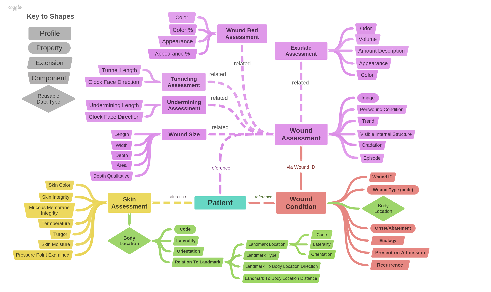
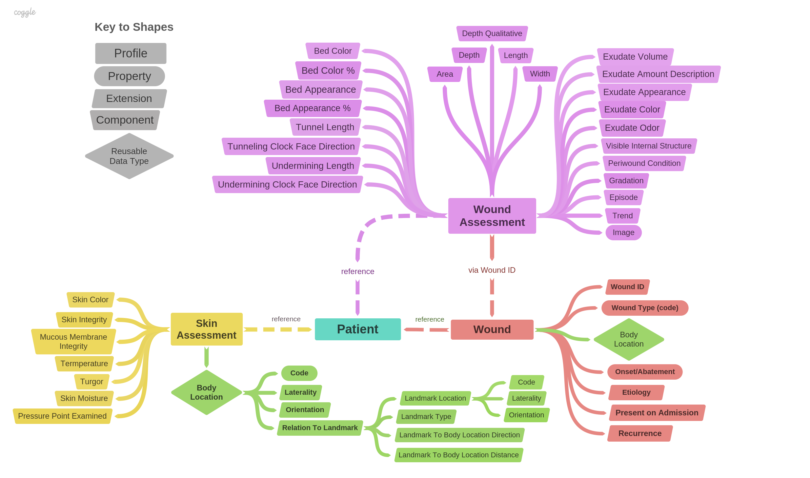
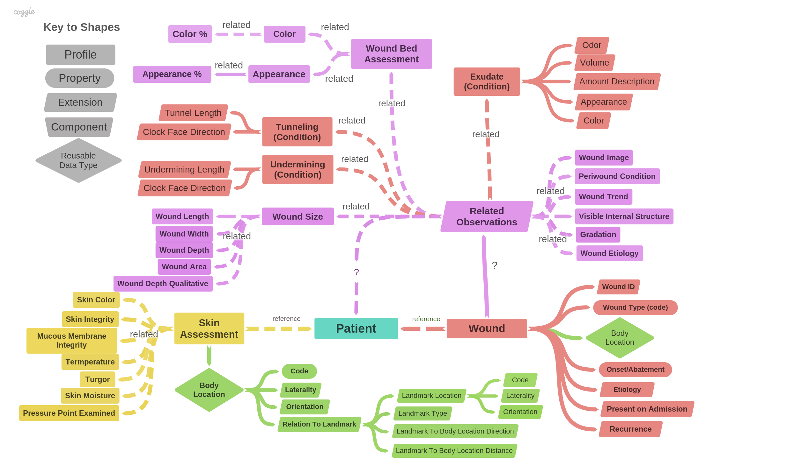

This a FHIR Implementation Guide (IG) for Skin and Wound Assessment.
This is one of three efforts to model the same clinical content. An alternate Skin and Wound IG created by Intermountain Healthcare can be found here. Another IG, focused more on podiatry wounds but sharing similar content, is found here. The IG authors have worked together and have openly shared clinical content and modeling ideas. The end products, however, are not the same.
The use case under consideration involves:
Also included are specialized profiles that represent wounds of the foot.
Some of the main design goals of this IG are as follows:
The model is summarized by the following illustration:
The wound is an identifiable entity at a particular body site that maintains its identity over a period of time. It has an onset and (potentially) an abatement time. As such, wound is a profile of Condition. Representing the wound as a condition (problem) allows multiple observations about the wound to refer back to the same wound.
One of the key features of wound assessment is that observations have a hierarchical structure with 1-to-many relationships at each level. For example, a patient can have multiple wounds, each wound can have multiple tunnels, and each tunnel on each wound on each patient can have a measured length. This presents a modeling challenge.
In this implementation, we use Observation components when appropriate and sub-observations (Observation.related) where necessary. Panel-type sub-observations are required where the panel observations themselves have sub-observations or components.
This problem offers many modeling options. In this section, we explore several modeling alternatives. Some aspects could be combined to form additional alternatives.
According to US Core, "Laboratory results are grouped and summarized using the DiagnosticReport resource which typically reference Observation resource(s). Each Observation resource represents an individual laboratory test and result value, a “nested” panel (such as a microbial susceptibility panel) which references other observations, or rarely a laboratory test with component result values."
If we were to follow US Core, the Wound Assessment would not be an Observation, but a Diagnostic Report. It would reference the Sub-Observations (Wound Tunneling, Exudate Assessment, Wound Bed Assessment, etc.)in the manner presented here. We did not take that approach because the Wound Assessment has components that do not require independent observations, and DiagnosticReports do not support components.
This approach is depicted below:
This approach replaces every sub-observation (Wound Tunneling, Exudate Assessment, Wound Bed Assessment, etc.) with observation components. This is actually feasible -- there is no need for multiple Observations. Each wound, observed at a given time, only has one length, width, depth. Each wound, observed at a given time, can only have one exudate odor, volume, color, and amount. So these properties can be modeled using observation components on Wound Assessment.
The only significant complexity comes from the need to pair up each wound tunnel length with its corresponding clock direction, each bed color with its corresponding bed area percent, and each undermining length with its corresponding clock direction. To handle this requirement in the context of components-only, we can exploit the fact that FHIR arrays are order-preserving. Specifically, we can make a requirements that corresponding arrays be the same length, and interpret the n-th element of the tunneling length array to correspond to the n-th element of the clock direction array, associate the m-th element of the bed color array with the m-th element of the bed color area array, etc. Using this approach, only two Observation-based profiles would be necessary (Wound Assessment and Skin Assessment).
On the whole, this approach appears the simplest of all, and may be preferred to the approach presented in this IG. A minor disadvantage is losing the grouping provided by the sub-observations. For example, the five aspects of exudate assessment are not grouped together into a single observation.
The approach maximizes the number of observations and makes each observation about the same wound a separate, self-contained observation. For example, the length, width, and depth of the wound would be modeled as three separate observations.
A downside of this approach is that it creates the maximum number of separate pieces of information, making it harder to re-create a coherent whole. For example, pairing a wound bed color with the corresponding wound bed area percentage requires following a link from the wound bed observation to the wound bed color observation to the wound bed area percentage observation. The wound bed area percentage observation is uninterpretable by itself, which violates the principle that observations should be able to be interpreted individually.
Some aspects of wounds, for example, wound tunnels, can be considered conditions unto themselves. They have an onset, exist for a period time, and then abate. If tunnels and underminings are modeled this way, then the features of those conditions (e.g., tunnel length and direction) can be modeled using extensions.
The downside of this approach is that the tunnel length and direction will change over time, and are best modeled by related observations. Having observations related to the tunnel would allow the tracking of the tunnel length over time.
This approach, presented as a less-than-optimal approach, combines features of Alternatives 3 and 4:
There are several problems here:
Consistent with the evolving consensus, this IG uses LOINC for "questions" and SNOMED-CT for "answers". The codes and value set, in most cases, have been borrowed from the Intermountain implementation of Skin and Wound IG.
Much of the skin and wound domain content was provided by Susan Matney. Additional podiatry content was provided by Reed Gelzer, Trustworthy EHR LLC and Michael Brody, TLD Systems
Discussion and feedback was generously provided by all members of the CIMI Work Group especially the co-chairs, Dr. Stan Huff, Claude Nanjo, Galen Mulrooney, and Richard Esmond.
This implementation guide was authored by Dr. Mark Kramer using the Clinical Information Modeling and Profiling Language (CIMPL), a free, open source toolchain from MITRE Corporation.